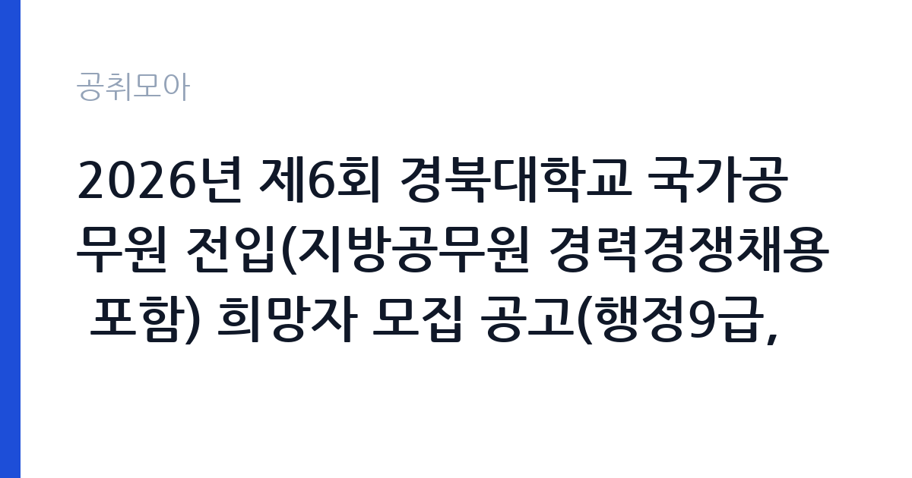

[국가기관] 2026년 제6회 경북대학교 국가공무원 전입(지방공무원 경력경쟁채용 포함) 희망자 모집 공고(행정9급, 운전9급)
경북대학교 · 대구 · 마감 2026-11-02 (D-12) · 출처 나라일터

한눈에 보는 모집 조건
| 기관 | 경북대학교 |
|---|---|
| 공고명 | 2026년 제6회 경북대학교 국가공무원 전입(지방공무원 경력경쟁채용 포함) 희망자 모집 공고(행정9급, 운전9급) |
| 고용형태 | 정규직 |
| 근무지 | 대구 |
| 게시일 | 2026-10-21 |
| 마감일 | 2026-11-02 (D-12) |
지원자격, 이렇게 읽으세요
- 행정 9급 1명 운전 9급 1명
- 접수 ~2026-11-02 마감
- 세부 조건은 원문 공고문 확인
정규직 채용은 기간의 정함이 없는 근로계약을 전제로 합니다. 수습 기간을 두고 평가한 뒤 정규직으로 확정하는 절차가 일반적이며 기관의 인사 규정과 임금 체계를 적용받습니다. 이번 공고는 경북대학교에서 직접 진행하는 자체 전형으로, 응시자격과 제출서류는 공고문에 항목별로 제시됩니다. 운전 직무는 무엇보다 면허 종류와 실제 운전 경력이 기준입니다. 1종 보통 또는 1종 대형 면허를 요구하는 경우가 많고, 화물이나 버스 운전은 별도 자격이 필요합니다. 최근 3년 또는 5년 내 교통사고와 음주운전 이력이 없어야 한다는 조항이 자주 붙습니다. 운전 경력 증명서나 보험 가입 이력으로 이를 증빙해야 하므로 미리 발급받아 두십시오. 장거리 운행이 포함되면 건강 상태와 야간 운전 가능 여부도 확인합니다. 서류는 접수 마감 이후 보완이 되지 않으므로 자격 요건과 증빙 서류를 마감 전에 모두 갖춰야 합니다. 공고문에 명시된 우대 사항은 해당 여부를 확인해 증빙을 첨부해야 가점이 반영됩니다. 학력이나 전공 요건이 없는 공고라도 제출서류 목록은 그대로 적용되므로 서류 준비 부담은 줄지 않습니다.
이 공고의 포인트
이 공고의 첫 번째 포인트는 고용 형태입니다. 수습 기간 평가를 통과하면 기간의 정함이 없는 신분이 되어 고용이 안정됩니다. 두 번째는 업무 범위가 명확하다는 점입니다. 운전 직무로 채용되므로 배치 이후 담당 업무가 크게 흔들리지 않습니다. 세 번째는 근무지입니다. 대구 지역 근무로 수도권 공고에 비해 지원자 분포가 넓지 않아 상대적으로 경쟁이 분산되는 경우가 있습니다. 채용 규모가 크지 않아 면접 비중이 높은 전형이 될 가능성이 있습니다. 같은 직무로 함께 올라온 공고 4건 가운데 마감이 중간에 위치하므로 다른 공고와 일정이 겹치는지 확인하십시오. 다만 선발 인원이 1명으로 많지 않아 자격을 갖춘 지원자가 몰리면 경쟁률이 높아질 수 있습니다.
전형은 어떻게 진행되나
전형은 서류심사와 면접심사를 기본으로 하고 직무에 따라 필기나 실기, 체력검정이 추가됩니다. 서류 단계에서는 응시자격 충족 여부와 제출서류 형식을 확인하며 이 단계에서 탈락하는 지원자가 적지 않습니다. 면접은 직무 이해도와 경험을 확인하는 방식으로 진행되고 발표는 개별 통보나 홈페이지 게시로 이뤄집니다. 최종합격 이후에는 결격사유 조회와 채용 신체검사가 이어지며 이 절차에서 문제가 확인되면 합격이 취소될 수 있습니다. 구체적인 전형 단계와 배점은 공고문에 표로 정리되어 있으니 원문을 기준으로 준비하십시오. 응시 수수료가 있는 경우 환불 기준과 기한이 정해져 있으니 접수 전에 확인하십시오.
이런 분께 추천해요
- 요구 면허를 보유하고 운전 경력이 충분한 분
- 교통사고·음주운전 이력이 없는 분
- 차량 점검과 운행 기록을 성실히 관리하는 분
지원 전 체크리스트
- 응시자격 요건과 경력 기준을 충족하는가 — 경력은 증명서로 입증해야 합니다
- 수습 기간과 정규직 전환 조건을 확인했는가
- 제출서류 목록을 모두 준비했는가 — 누락 시 서류 단계에서 탈락합니다
- 접수 마감 2026-11-02 이전에 접수 방식을 확인해 제출했는가
모집 일정과 제출 타이밍
2026-10-21에 공고가 올라왔고 접수는 2026-11-02까지입니다. 남은 기간은 12일이며, 이 기간에 자격증 사본과 경력증명서, 주민등록등본 같은 기본 서류를 모두 준비해야 합니다. 경력증명서는 발급에 며칠이 걸리는 경우가 있으니 가장 먼저 신청하십시오. 접수는 온라인과 우편·방문으로 나뉘는 경우가 많고, 우편 접수는 도착 기준으로 판정되므로 마감일 소인만 믿으면 안 됩니다. 면접 일정은 서류 발표 후 개별 통보되므로 제출 후에도 연락을 받을 수 있도록 유지해야 합니다. 공휴일이 끼어 있으면 증명서 발급이 늦어질 수 있으니 발급 일정을 앞당기십시오. 대구 근무지는 도심 접근성이 좋은 편이지만 시설에 따라 외곽 배치가 있을 수 있습니다. 마감까지 2주 안팎이 있어 준비할 시간은 있지만 미루면 촉박해집니다. 선발 인원이 한두 명 수준이라 지원자 개개인의 서류 완성도가 그대로 평가에 반영됩니다.
직무 이해하기: 국가기관
교육기관은 학교 교육과 교원 연수, 교육 행정을 담당합니다. 교육청은 관내 학교를 지원하고, 대학은 학사와 연구, 학생 지원 업무를 운영합니다. 예산과 인사 규정이 교육부 지침과 자체 규정을 함께 따르므로 절차가 엄격합니다. 운전 직무는 기관 차량을 운행해 사람이나 물품을 옮기는 일입니다. 출발 전 차량 상태와 연료, 안전 장비를 점검하고 운행 일지를 기록합니다. 업무용 승용차, 승합차, 화물차, 청소 차량 등 담당 차량에 따라 필요한 면허가 달라집니다. 목적지와 시간이 매일 달라지므로 일정 관리와 대기 시간이 업무의 상당 부분을 차지합니다. 사고 예방과 차량 관리, 승객 응대 태도가 평가에 포함됩니다. 업무는 혼자 처리하기보다 부서 단위로 나눠 진행되므로 담당 구역과 협업 범위를 입사 초에 확인하는 것이 중요합니다. 업무 매뉴얼과 지침이 문서로 정리되어 있어 절차를 익히면 반복 업무는 빠르게 손에 붙습니다.
자기소개서 작성 팁
운전 지원서의 핵심은 무사고와 책임감입니다. 운전 경력 연수, 주행 거리, 무사고 기간을 수치로 제시하십시오. 차량 점검을 습관적으로 해온 방식이나 위험 상황에서 사고를 피한 경험을 구체적으로 쓰면 설득력이 높아집니다. 승객이나 이용자 응대 경험이 있다면 서비스 태도의 근거로 연결하십시오. 문항별 글자 수 제한을 먼저 확인하고, 각 문항의 첫 문장에 결론을 배치하는 방식이 읽기 쉽습니다. 지원 동기는 기관의 어떤 사업에 기여하겠다는 한 문장으로 시작하고, 이어서 본인의 경험을 근거로 붙이십시오. 감점을 피하려면 다른 기관에 보낼 수 있는 범용 문장을 그대로 쓰지 않는 것이 중요합니다. 기관 이름과 사업명이 문장 안에 자연스럽게 들어가야 준비도가 드러납니다.
면접 준비 포인트
면접에서는 안전 운전 습관과 상황 대응을 봅니다. 사고가 났을 때 어떤 순서로 조치할지, 승객이 시간을 지키지 않을 때 어떻게 대응할지, 차량 고장 시 어떻게 처리할지 묻습니다. 차량 관리 기록을 어떻게 해왔는지 구체적으로 답하면 신뢰를 줍니다. 무사고 경력과 장거리 운행 경험은 강점입니다. 답변은 상황, 판단, 조치의 순서로 정리하면 전달이 분명해집니다. 모르는 질문에는 모른다고 밝히고 확인 방법을 제시하는 편이 억지 답변보다 낫습니다. 마지막에는 근무 의사와 함께 2026-11-02 이후 일정에 언제든 응할 수 있다는 점을 전달하십시오. 직무 특성상 체력이나 근무 시간에 대한 질문이 나올 수 있으므로 솔직하게 답하고 관리 계획을 함께 제시하십시오.
급여·근무조건 읽는 법
운전 직무의 보수는 기관 임금표에 따른 기본급과 각종 수당으로 구성되며, 장거리·야간 운행이 있으면 여비와 초과근무수당이 추가됩니다. 무기계약직이면 정년까지 근무가 가능하고 기간제라면 계약 기간이 정해집니다. 2026년 최저임금은 시급 10,320원, 월 환산 2,156,880원이므로 최소 기준으로 확인하십시오. 차량 유지와 유류비를 기관이 부담하는지 공고문에서 확인해야 합니다. 세부 금액은 원문 보수표에 있습니다. 2026년 적용 최저임금은 시급 10,320원, 월 환산 2,156,880원(주 40시간·209시간 기준)입니다. 고용노동부 고시 제2025-47호로 확정된 금액입니다. 실수령액을 계산하려면 세금과 4대 보험료를 빼야 합니다. 공고문에는 세전 금액만 제시되는 경우가 많으므로, 월 급여에서 약 9% 안팎의 공제가 발생한다고 보고 대략적인 수령액을 가늠하십시오. 부양가족 수와 비과세 항목에 따라 차이가 나므로 정확한 금액은 급여 담당 부서에 문의하는 것이 가장 확실합니다. 수당 항목과 지급 주기도 함께 확인하십시오.
자주 묻는 질문
- 선발 인원은 몇 명인가요?
공고문 기준 1명입니다. 직종별로 인원이 나뉘는 경우가 있으니 모집분야 항목을 함께 확인하십시오. - 근무지는 어디인가요?
대구 지역의 경북대학교 소속 근무지입니다. 세부 주소와 출퇴근 조건은 원문 공고문에서 확인할 수 있습니다. - 보수는 얼마인가요?
채용 신분(정규직)과 기관 임금 규정에 따라 정해지며 구체적인 금액은 공고문 처우 항목에 제시됩니다. 금액이 공개되지 않은 경우에는 원문의 보수표를 확인하십시오.
함께 보면 좋은 공고
[국가기관] 2026년 남부지방산림청 제3차 공무직근로자(산불재난특수진화대원) 채용 공고 — 마감 2026-10-29[국가기관] 대전지방공소청 2026년 제1회 공무직근로자(사무원) 채용시험 시행계획 공고 — 마감 2026-10-30[국가기관] 2026년도 제1회 용인우체국 공무직 우체국소포원 채용 공고 — 마감 2026-10-30출처: 나라일터 공개정보를 바탕으로 공취모아가 정리한 안내글입니다. 모집 조건·일정은 변경될 수 있으니 지원 전 반드시 원문 공고문을 확인하세요. 본 글은 정보 제공용이며 합격을 보장하지 않습니다.